This is currently just a prototype for the moment; the entity is mainly composed of 2 codes: “The Mutation” & “Souless.” Also, its gender has been swapped; it was once a male, but we made her a female.

LOYALTY=FAULTY; GUILTY=TRUE;
CURRENT USE: VASE | CODE AMALGAMATE; CURRENT CODES INSIDE: - Souless → 22% - The Mutation → 20% - Manueh → 16% - Oveji Jones → 13% - Pumpkin Man → 9% - Toni’s Wrats → 7% - Mark Drew → 5% - Porky → 5% - IBAI the Ayuwoki → 2% - PJRLL → 1%